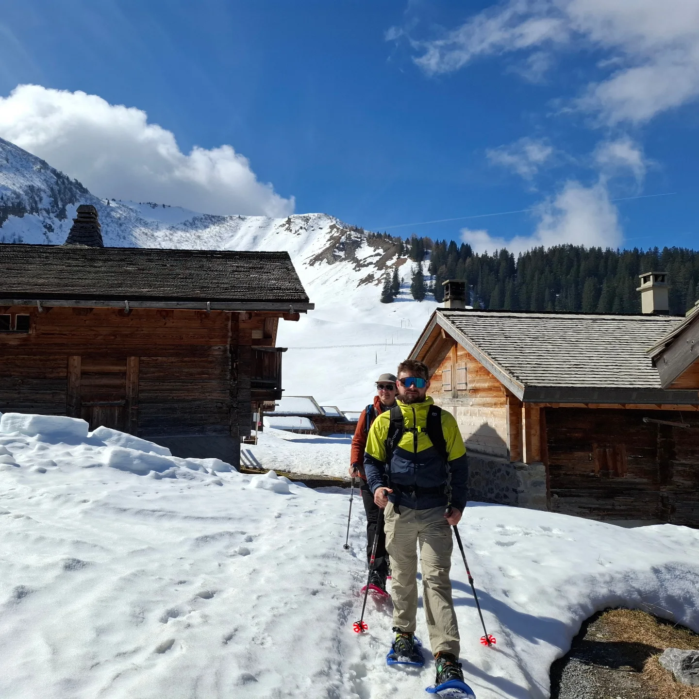
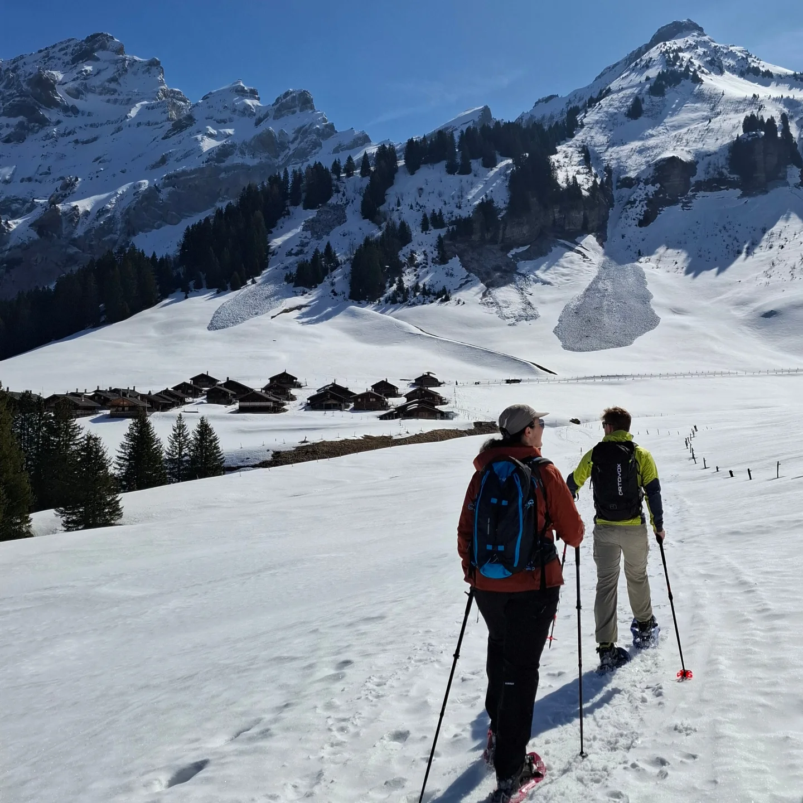
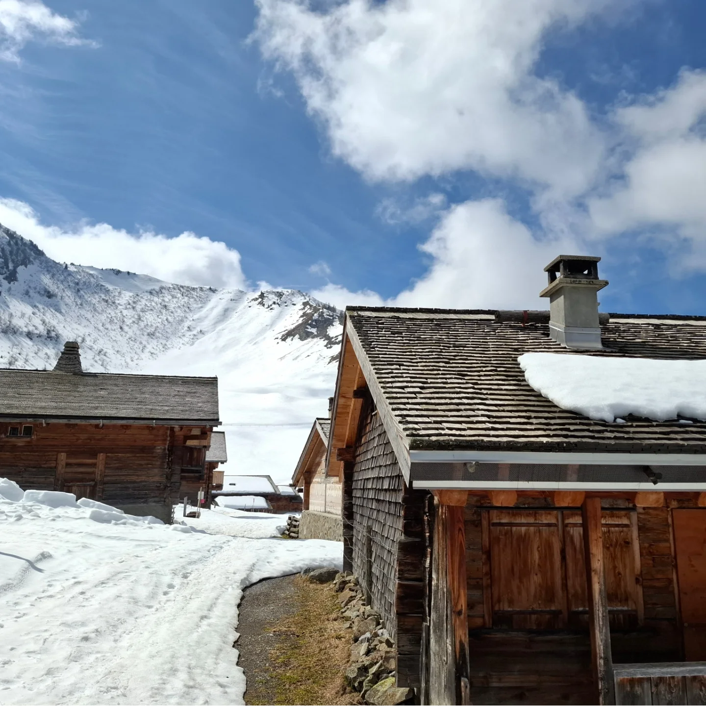
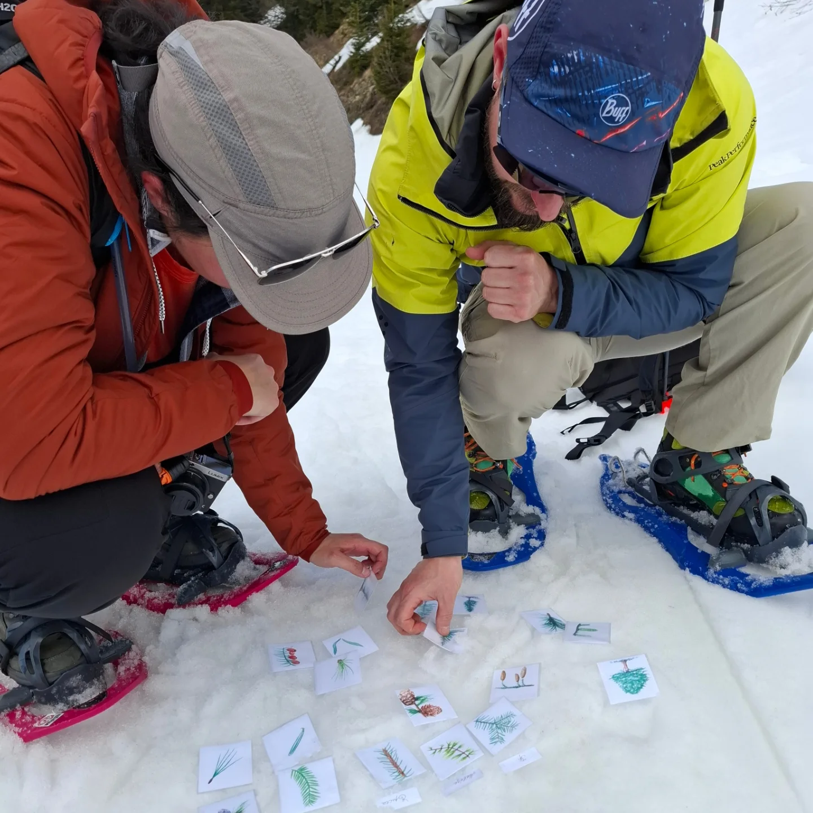

Dernière randonnée hivernale de la saison 2024-25 ! Et pour l’occasion , une journée magnifique sous un beau soleil ☀️ Nous avons commencé le parcours par une traversée dans la forêt avec les explications sur ce milieu ainsi des astuces pour reconnaître l’épicéa du sapin blanc. 🌲 C’est là que nous avons eu la chance de faire la première rencontre de la journée avec un blaireau 🦡 qui venait dans notre direction. Nous avons eu le temps de l’admirer avant qu’il parte se cacher. La deuxième rencontre se passa dans le hameau classé au patrimoine historique avec un renard 🦊 intrigué par nos sacs de randonnée. C’est arrivé durant les explications sur les tavillons et les bardeaux qui ornent chaques chalets de ce lieu. Suite à cette belle pause, nous avons continué notre marche en raquette. C’est sur le trajet du retour que les participants ont eu l’occasion de faire l’animation de Montagn’Art pour retrouver les résineux. C’était une sortie très riche. Merci aux participants pour ces beaux échanges 😄



